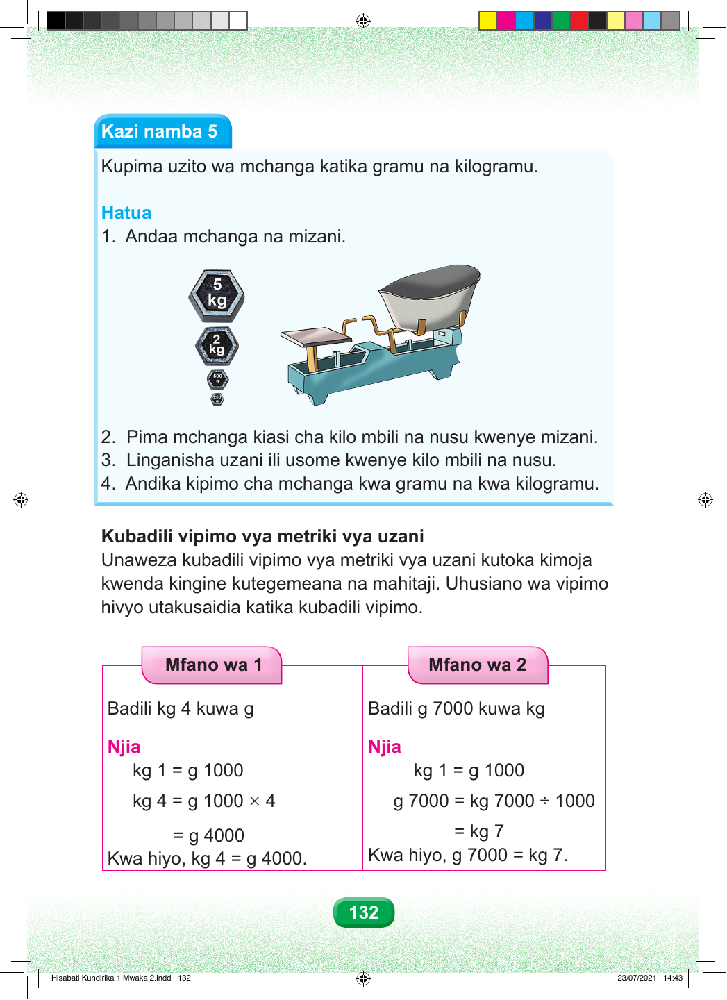

Kazi namba tano. Kupima uzito wa mchanga katika gramu na kilogramu. Hatua. Hatua ya kwanza. Andaa mchanga na mizani. Maelezo ya picha. Kuna mizani ya msawazo na vizani vinne vya kilogramu tano, kilogramu mbili, gramu mia tano na gramu mia mbili hamsini. Hatua ya pili. Pima mchanga kiasi cha kilogramu mbili na nusu kwenye mizani. Hatua ya tatu. Linganisha uzani hadi mizani ionyeshe kilogramu mbili na nusu. Hatua ya nne. Andika kipimo cha mchanga kwa gramu na kwa kilogramu. Kubadili vipimo vya metriki vya uzani Unaweza kubadili vipimo vya metriki vya uzani kutoka kimoja kwenda kingine kutegemeana na mahitaji. Uhusiano wa vipimo hivyo utakusaidia katika kubadili vipimo. Mifano miwili. Mfano wa kwanza. Badili kilogramu nne kuwa gramu. Njia. Kilogramu moja ni gramu elfu moja. Kilogramu nne ni gramu elfu moja kuzidisha nne, sawa sawa na gramu elfu nne. Kwa hiyo, kilogramu nne, sawa sawa na gramu elfu nne. Mfano wa pili. Badili gramu elfu saba kuwa kilogramu. Njia. Kilogramu moja ni gramu elfu moja. Gramu elfu saba ni kilogramu elfu saba kugawanya elfu moja, sawa sawa na kilogramu saba. Kwa hiyo, gramu elfu saba, sawa sawa na kilogramu saba. 132 Hisabati Kundirika 1 Mwaka 2.indd 132 23/07/2021 14:43